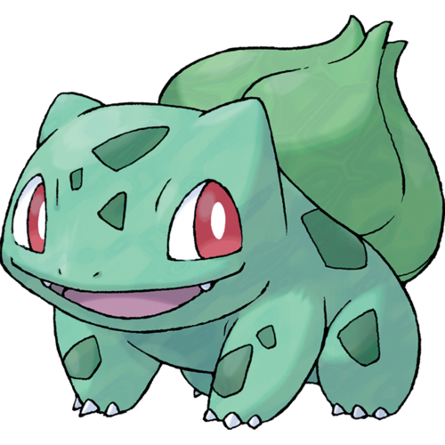

Bulbasaur
 Bulbasaur is a small, quadruped Pokémon that has turquoise skin with darker teal patches. It has red eyes with white pupils and scleras. It also has pointed, ear-like structures on top of its head. Its snout is short and blunt, and it has a wide mouth. A pair of small, pointed teeth are visible in the upper jaw when its mouth is open. Each of its thick legs ends with three sharp claws. On its back is a green plant bulb, which is grown from a seed planted there at birth. The bulb provides it with energy through photosynthesis as well as from the nutrient-rich seeds contained within.
As mentioned in the anime, starter Pokémon are raised by Breeders to be distributed to new Trainers. Having been domesticated from birth, Bulbasaur is regarded as both a rare and well-behaved Pokémon. It is known to be extremely loyal, even after long-term abandonment. Bulbasaur has also shown itself to be an excellent caretaker, even having a special technique called the "Bulba-by." To perform this technique, Bulbasaur uses its vines to pick up a young Pokémon and soothingly rocks it in the air. It is found in grasslands and forests throughout the Kanto region.
However, due to Bulbasaur's status as starter Pokémon, it is hard to come by in the wild and generally found under the ownership of a Trainer. It has been observed that a Bulbasaur's bulb will flash blue when it is ready to evolve. If it does not want to evolve, it struggles to resist the transformation. Many Bulbasaur gather every year in a hidden garden in Kanto to evolve into Ivysaur in a ceremony led by a Venusaur.